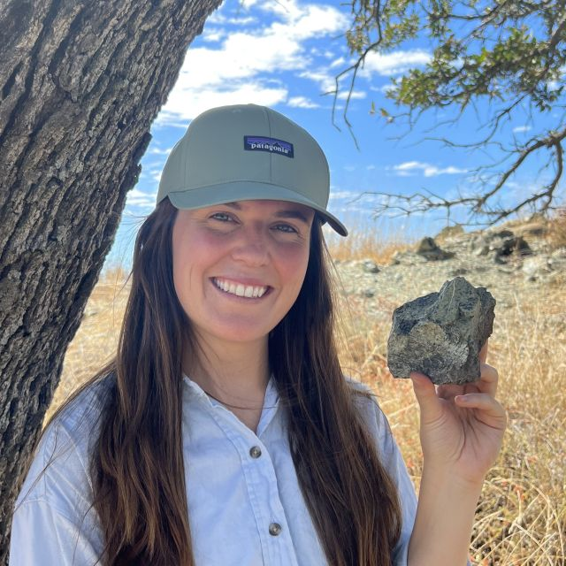
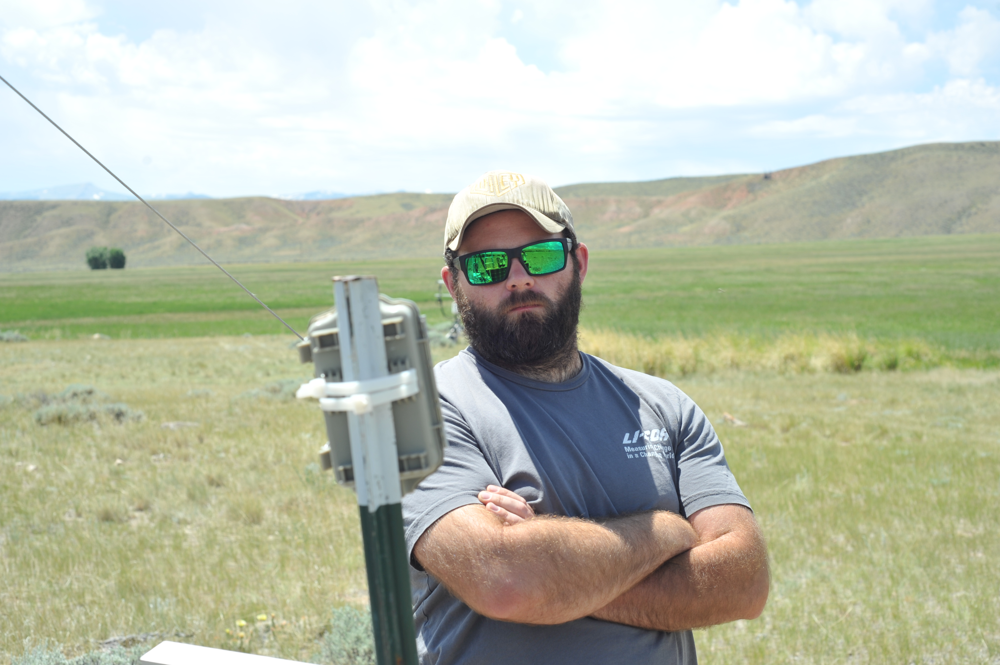
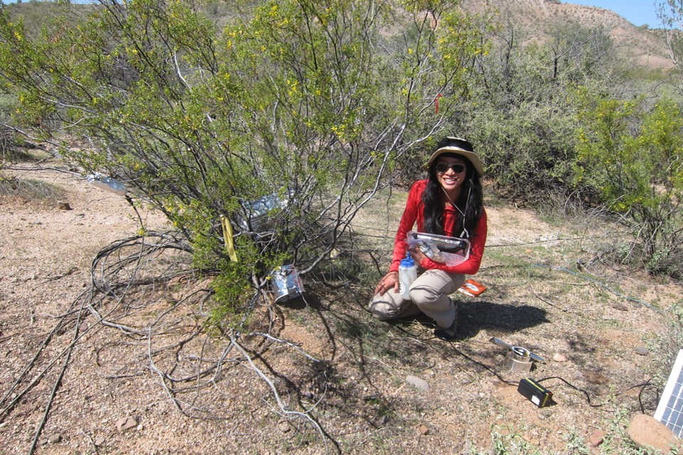

PSInet
Home
About
Get Involved
Submit Data
Events
Posts
Categories
All
(7)
electrical resistivity imaging
(1)
heat stress
(1)
microtensiometry
(1)
plant hydraulics
(3)
plant water potential
(4)
psychrometry
(1)
soil water potential
(2)
thermal tolerance
(1)
water stress
(2)
workshops
(2)
Posts
Register for the 2024 Plant Hydraulics Methods Workshop
plant hydraulics
workshops
Highlands Biological Station, July 16-20
Dan Johnson
Jan 26, 2024

PhysFest 2023
plant hydraulics
plant water potential
soil water potential
workshops
PhysFest 4 - October 2023
Piper Lovegreen
Dec 7, 2023
Putting microtensiometry to the test
plant water potential
water stress
microtensiometry
Continuous stem water potential in beech and ash
Ruth-Kristina Magh
Dec 1, 2023
How hot can leaves get?
heat stress
thermal tolerance
plant hydraulics
Leaf thermistors deployed in a heat island
Alexandra Schuessler
Sep 28, 2023
Harmonizing global water stress research
plant water potential
water stress
The role of PSInet
Francesco Giardina
Aug 31, 2023

Expanding soil water potential obervations using near-surface geophysics
electrical resistivity imaging
soil water potential
One path toward resolving the spatial-temporal mismatch
Daniel P. Beverly
May 24, 2023

Improving psychrometer installations
psychrometry
plant water potential
What I learned from George Koch and Ben Umali
Jessica S. Guo
Apr 25, 2023
No matching items